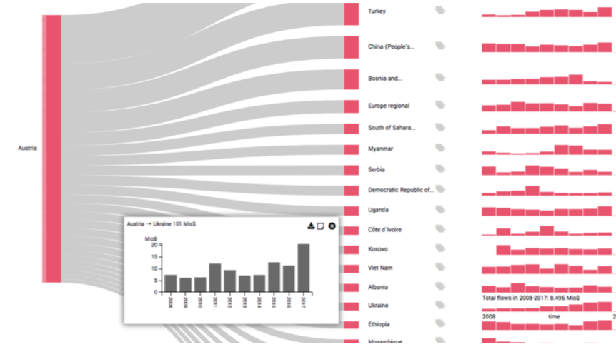

netflower: Dynamic Network Visualization for Data Journalists

Venue. CGF (2019)
Authors. Christina Stoiber, Alexander Rind, Florian Grassinger, Robert Gutounig, Eva Goldgruber, Michael Sedlmair, Stefan Emrich, Wolfgang Aigner
Abstract. Journalists need visual interfaces that cater to the exploratory nature of their investigative activities. In this paper, we report on a four-year design study with data journalists. The main result is netflower, a visual exploration tool that supports journalists in investigating quantitative flows in dynamic network data for story-finding. The visual metaphor is based on Sankey diagrams and has been extended to make it capable of processing large amounts of input data as well as network change over time. We followed a structured, iterative design process including requirement analysis and multiple design and prototyping iterations in close cooperation with journalists. To validate our concept and prototype, a workshop series and two diary studies were conducted with journalists. Our findings indicate that the prototype can be picked up quickly by journalists and valuable insights can be achieved in a few hours. The prototype can be accessed at: http://netflower.fhstp.ac.at/